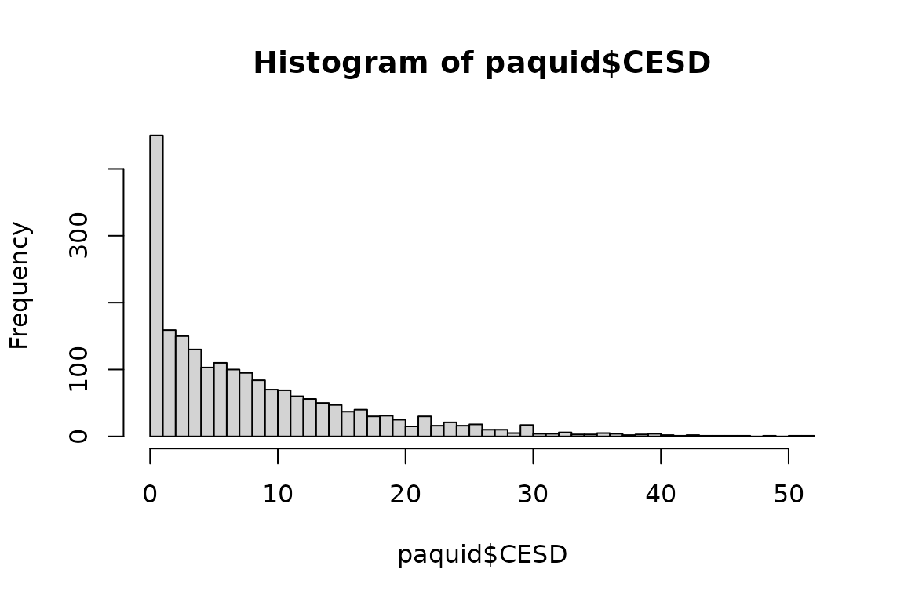
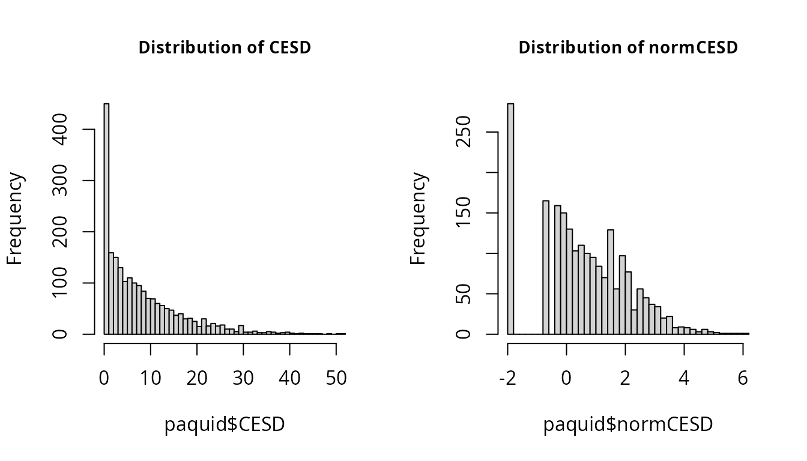

Pre-normalizing a dependent variable using lcmm
Source:vignettes/pre_normalizing.Rmd
pre_normalizing.Rmd
Functions lcmm, multlcmm, Jointlcmm and mpjlcmm handle dependent variables that are not necessarily Gaussian. These functions rely on the simultaneous normalization of the variable and estimation of the regression parameters using parameterized link functions (argument “link=”).
However in some cases, one may want to pre-normalize once for all a dependent variable so that standard methods for Gaussian outcomes can then be used without caution.
The methodology has been fully described and validated for MMSE in Philipps et al. (2014) (see https://doi.org/10.1159/000365637 )
We describe here how this can be done using CES-D example.
CES-D example
CES-D is the scale of depressive symptomatology in the Paquid dataset made of 20 items. Its sumscore is extremely skewed with a large proportion of small values:
summary(paquid$CESD)
Min. 1st Qu. Median Mean 3rd Qu. Max. NA's
0.000 2.000 6.000 8.488 12.000 52.000 146
hist(paquid$CESD, breaks=50)
Normalizing a variable with lcmm
The first step is to normalize the variable by estimating a latent process mixed model. This model should roughly fit the data but does not need to be the perfect model or the exact same model as planned for the future complete analysis. One possibility is to define an “empty model” for the covariates (but not the time functions and random effects) :
#We recenter and scale the time variable "age" in order to avoid numerical problems
paquid$age65 <- (paquid$age-65)/10
mpreH <- lcmm(CESD ~ age65 + I(age65^2), random = ~ age65 + I(age65^2), subject = 'ID', data=paquid, link = '5-quant-splines')
Here a splines link function with 5 knots placed at the quantiles is used.
The variable “obs” of output table “mpreH$pred” includes the normalized values of CES-D for all the observations of the dataset:
head(mpreH$pred)
ID pred_m resid_m pred_ss resid_ss obs pred_m1 pred_ss1
1 1 0.11087827 1.3084181 0.9342107 0.4850857 1.419296 0.11087827 0.9342107
2 2 0.06084672 1.2129369 1.4361554 -0.1623718 1.273784 0.06084672 1.4361554
3 2 0.13130656 1.8192134 1.5798638 0.3706562 1.950520 0.13130656 1.5798638
4 2 0.31339488 1.9993097 1.8557179 0.4569867 2.312705 0.31339488 1.8557179
5 2 0.82900611 1.9299118 2.2349532 0.5239648 2.758918 0.82900611 2.2349532
7 3 0.26327499 0.8557632 0.5912826 0.5277556 1.119038 0.26327499 0.5912826
The normalized variable (to be called for instance “normCESD”) can now be added to the dataset
paquid$normCESD <- NULL
paquid$normCESD[!is.na(paquid$CESD)] <- mpreH$pred$obsfor further analysis.
Comparison before and after normalization
The transformation does not change the structure of the data. In particular, the spike at 0 is still present.
par(mfrow=c(1,2))
hist(paquid$CESD, breaks=50, cex.main=0.9, main="Distribution of CESD")
hist(paquid$normCESD, breaks=50, cex.main=0.9, main="Distribution of normCESD") 
From the histogram, this is not clear that the normalized CESD has a Gaussian distribution. Yet, this normalization makes the use of methods for Gaussian outcomes correct.
For instance, when fitting a linear mixed model including the variable male, the subject-specific residuals plots become correct (right part):
normCESD <- hlme(normCESD ~ age65*male, random = ~ age65, subject = 'ID', data=paquid)
plot(normCESD, cex.main=0.8)In comparison, without the normalization step, the subject-specific residuals exhibited a departure from normality.
CESD <- hlme(CESD ~ age65*male, random = ~ age65, subject = 'ID', data=paquid)
plot(CESD, cex.main=0.8)To go further
For future use, it can be interesting to define the metric of normCESD. Indeed, for now, its scale in not easy to understand as it depends on the data structure. Two options are possible:
1. Standardizing normCESD
The variable can be standardized (like for a Z-score) by removing the mean at a time and dividing by the standard deviation at the same time. This can be done if many data are observed at the same time, like at baseline. Here, with age as the time scale, we could not use that easily.
Unfortunately, baseline data is not available in the dataset! So here is a theoretical example of the computation:
2. Rescaling normCESD into 0 - 100
The variable can be scaled in 0-100 with 0 corresponding to the minimum value observed in the sample (usually 0) and 100 the maximum observed value. This works whatever the timescale under study:
Example of model with normCESD100
The statistical analysis can now be performed using one of the normalized variables, normCESD, ZnormCESD or normCESD100.
With normCESD100 for example, a linear mixed model with a linear trajectory according to age with adjustment for male, education and their interaction with time as well as the birth cohort effect (age at entry) can be fitted:
m1 <- hlme(normCESD100 ~ age65*male + CEP*age65 + age_init, random=~age65, subject='ID',data=paquid)
summary(m1)
Or a linear mixed model with a linear trajectory according to time since entry with adjustment for male, education and their interaction with time as well as the birth cohort effect (age at entry):
paquid$time <- paquid$age - paquid$age_init
m2 <- hlme(normCESD100 ~ time*male + CEP*time + age_init, random=~time, subject='ID', data=paquid)
summary(m2)Or any other statistical method assuming normality for the outcome!